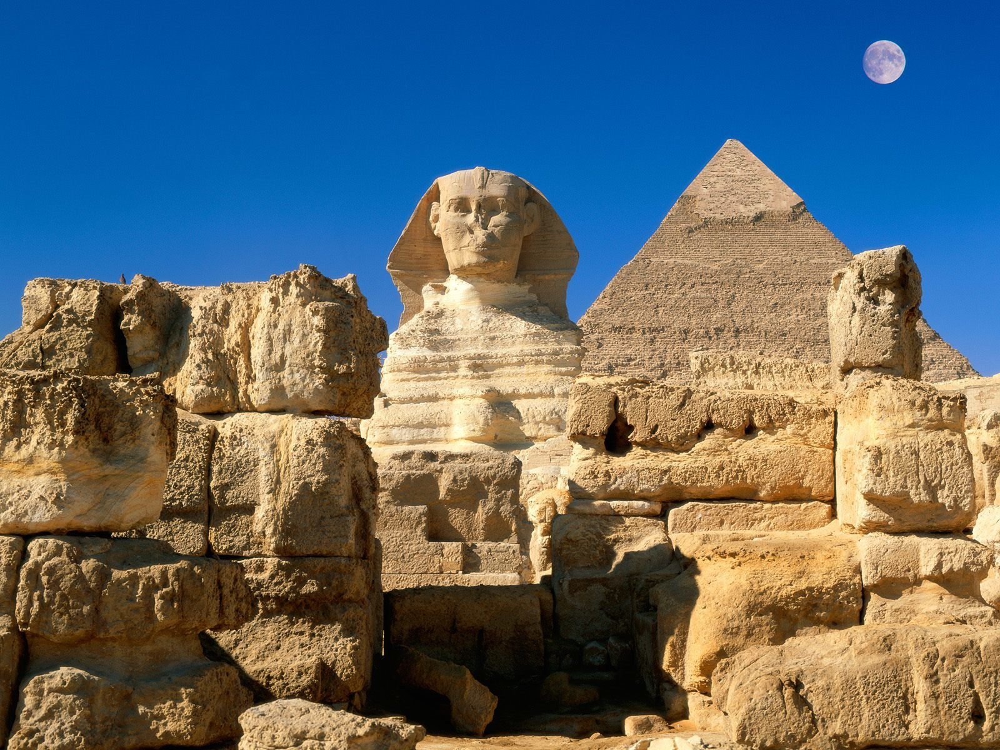

KHUFU(KEOPS) PİRAMİDİ

MÖ 2551 – MÖ 2560 yılları arasında Kahire de yapılmış olan üç piramit’in en büyüğüdür.
İçerisinde 3 oda olduğu söylenmektedir ancak bu zamana kadar piramit’in içerisine girilememiştir.
Piramitin yükseliği 138 metredir.
Taşların üst üste konması ile inşa edilmiştir.
Piramit yapılışından bu güne kadar bir çok gizemi barındırmaktadır.
Bunun temel nedeni ise piramit’i yaptıran kişi khufu, inşa bittikten sonra piramit’in yapımında çalışan herkesi öldürmesidir.
MİKERİNOS (MYKERİNOS) PİRAMİDİ

Gize piramitlerinin en küçüğüdür.
Mikerinos öldükten sonra oğlu shepseskaf tarafından yaptırılmıştır.
Mikerinos’un diğer piramitlere göre yapısal bir farklılığı vardır oda defin odasının alt kısımda olmasıdır.
Yüksekliği ise yaklaşık olarak 66 metredir.
KEFREN PİRAMİDİ

Kahire de, gize bölgesin de inşa edilmiştir.
Mikerinos tarafından yapıldığı söylenmektedir.
Büyüklük olarak 143 metre boyu ile 2. büyük piramittir.
Piramidin 2 adet girişi vardır.
Kefren’in 23 adet heykeli doğu tarafında bir kısımda bulunmaktadır.
Piramit içerisindeki odaların genişliğinin bir hayli büyük olduğu söylenmektedir.
MISIR PİRAMİTLERİNİN İNSANLARI ŞAŞIRTAN ÖZELLİKLERİ
1. Kirletilmiş su, piramit’in içerisinde bırakılırsa su belli bir müddet sonra arıtılmış halde olur.
2.Piramit kimin adına yapıldıysa, onun mezarının bulunduğu odaya doğduğu ve tahta çıktığı günlerde güneş girer.
3.Piramitlerin yapımında kullanılan taşların ağırlığı 2500 kg civarında olup yapıldıı yere yüzlerce kilometre mesafeden getirildiği söylenmektedir. Nasıl getirildiği konusunda da farklı fikirler bulunmaktadır. Mesela tekerlekli bir taşıma sistemi kullanılarak getirildiği, büyük hayvanların çekerek getirdiği veya yapımında binlerce kişi çalıştığı için çalışanlar tarafından taşındığı gibi.
4.Yanık, kesik gibi yaralar piramit’in içerisinde çok daha hızlı iyileşme göstermektedir.
5.Çöp atıkları piramit’in içerisinde koku vermez ve donuk bir kalıp alır.
6.Piramit’in içerisine konan süt belli bir süre sonra yoğurt haline gelir.
7.Piramit’in içerisinde sonar, radar vb. cihazlar çalışmamaktadır.
8.Piramitlerin en iç kısmı hakkında çok bir bilgi birikimine sahip değiliz. Çünkü piramit araştırmacılarının yaptığı araştırmalarda sürekli aynı yerde döndüklerini, kaybolduklarını ancak iç kısmına erişemediklerini belirtmişlerdir.
9.Keops, Mikerinos ve Kefren piramitlerinin yapımında ciddi matematiksel hesaplamalar olduğunu ispatlayan olaylar mevcuttur. Mesela, üç piramit arasında pisagor üçgeni olacak şekilde inşa edilmiştir ve kenar oranı 3:4:5’tir.
10.Keops piramitinin dört yüzeyinin toplam yüz ölçümü, piramit’in yüksekliğinin karesine eşittir.
11.Keops piramidi, 4 ana yöne göre düzenlenerek inşa edilmiştir.
12.Ekin ortasıyla mart başı arasında düşürdüğü gölgeler mevsimleri ve yılın uzunluğunu gösterir yani piramitlerin yapımı ile bir çeşit güneş saati de elde edilmiştir.
13.Keops piramidi ile dünyanın merkezi arasındaki uzaklık, kuzey kutbuyla arasındaki uzaklığa eşittir.
14.Keops piramitinin, yüksekliğini 1 milyar ile çarparsak yaklaşık olarak dünya ile güneş arasındaki mesafeyi elde ederiz.
15.Daha bunun gibi bir çok özellik vardır diyebilirim öğrendikçe de ekleyeceğim ve son olarak da değinmek istediğim bir nokta var keops piramidinin aynısını japonya yapmaya çalıştı ancak çalışmaları başarısız olmuştur.
16.Piramit’in içerisinde yetiştirilen bir bitki dışarıya göre çok daha hızlı büyümektedir.
BASLIK
ajscfbasbvasjvas vasv
dıger yazı kısmı